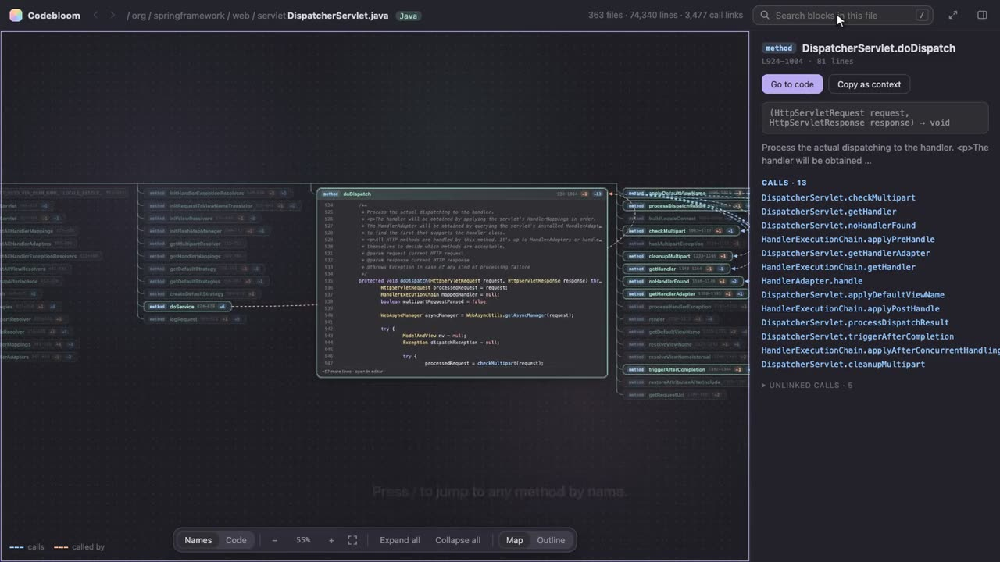
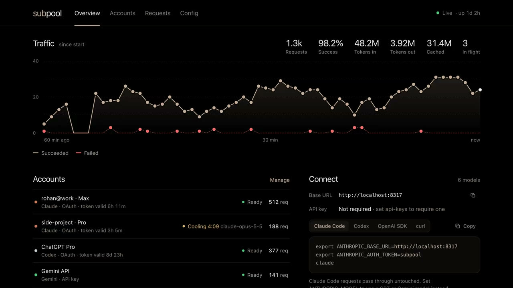
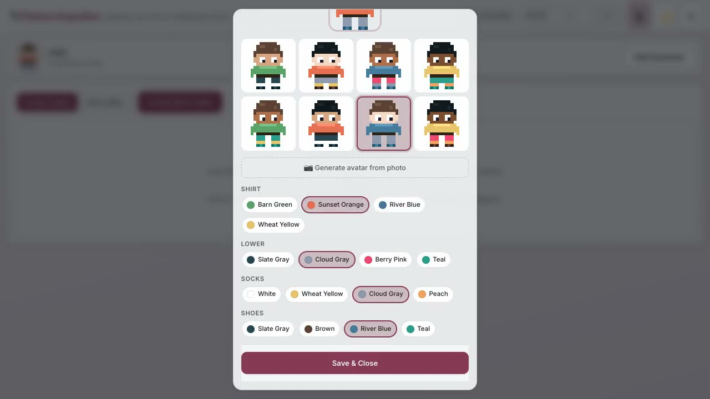
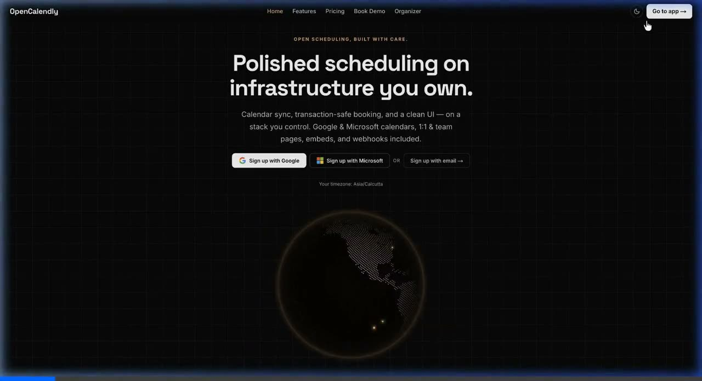
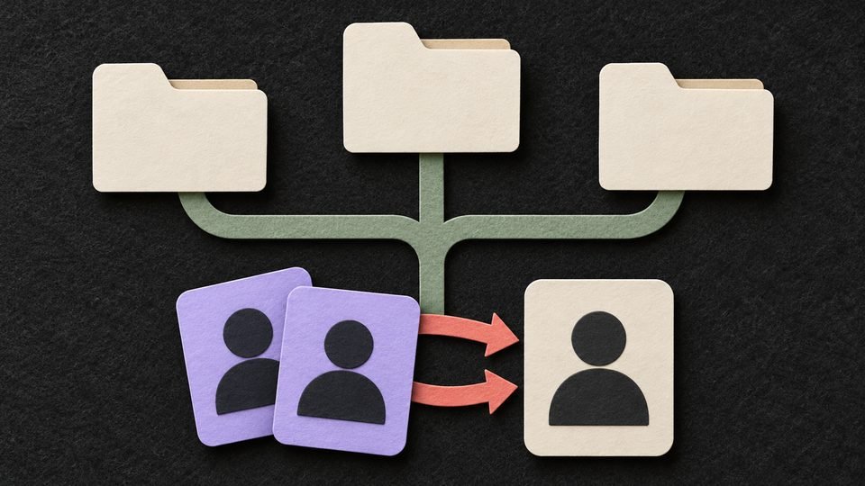
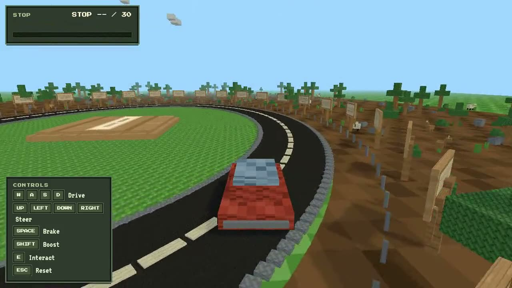
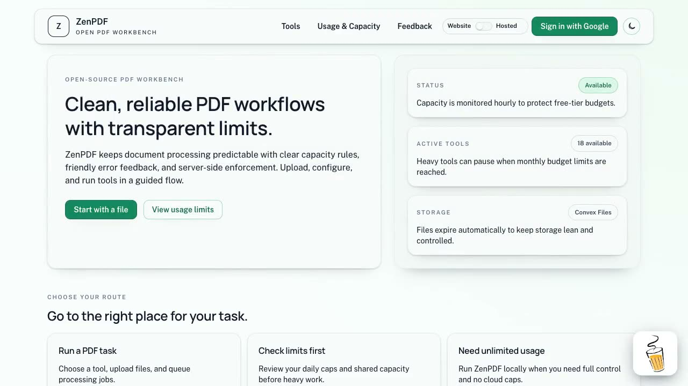

Now: Lead ML Engineer @ Altimetrik
Hi, I'm Rohan.
I build ML systems and the tools around them.
Lead ML engineer in India building data and ML orchestration on Databricks, working mostly in Python, Go and TypeScript. Outside work I ship developer tools like Codebloom, and send fixes upstream to the open-source projects I depend on.
Open to remote roles, or on-site in Hyderabad, Seattle, San Francisco, the Netherlands, Germany and Denmark.
Things Shipped
-

CodebloomSee any codebase bloom into a mind map, with call arrows across files. On VS Code, Open VSX and JetBrains. IDE Extension - OrbitA better Alt+Tab for Omarchy: macOS icons, Windows 7 stacks or a Windows 11 grid. Omarchy
-

subpoolYour Claude, ChatGPT and Gemini subscriptions as one fast API, with a built-in dashboard. Rust -

Pasture ImpostersAmong Us on a Pokémon-style farm: make your avatar and catch the imposter. Game -

OpenCalendlyOpen-source Calendly: share a link, take 1:1 or team bookings, synced to your calendar. Web App - ChromarchyA local-first Photoshop alternative for Omarchy and Arch Linux. In Progress
-

gogcli-plusDrive reports, local-to-Drive sync and contact deduplication on top of gogcli. CLI -

PaperloopDrive through Ilya Sutskever's must-read AI papers in a Minecraft-style world. Web App - SolitaireFive classic solitaire games for Omarchy, offline and ad-free. Omarchy
-

ZenPDFA clean, open-source PDF workbench with practical tools and transparent usage limits. Web App - ZenPDF for OmarchyAn offline-first Acrobat alternative for Omarchy and Arch Linux. In Progress
Open Source
A selection from popular projects at Google, Meta, Microsoft, OpenClaw, Grafana Labs and others. These aren't all of them: see more on GitHub.
-
- #12054Fixed localized sites publishing wrong URLs in metadata and sitemaps.
-
- #12516Kept session context alive across the agent's reply lifecycle, including ACP delegation and resumes.
-
- #32846Enabled int8 and uint32 support in the CPU
Whereoperator.
- #32846Enabled int8 and uint32 support in the CPU
-
- #4504Kept element IDs and source metadata intact when reloading Unstructured's own JSON output.
-
- #3084Fixed handlers with keyword-only parameters getting the wrong arguments.
-
- #2808Removed duplicate vulnerability queries in bulk scans, keeping result order.
Work
-
Lead ML Engineer Altimetrik
Feature engineering and ML orchestration for Calibo's data and AI platform, which runs workflows across Databricks and Snowflake. As Lead I own technical design, delivery and integration across its ML services and data pipelines.
Senior ML EngineerLead ML Engineer
- Feature engineering track: built configurable data preparation in Python, PySpark and SQL (source filtering, missing-value handling, query profiling and custom features), with LangGraph review workflows behind FastAPI that validate each plan before approved configs move to the next stage.
- ML orchestration and training: built reusable scikit-learn training for six classification and regression algorithms with held-out evaluation and saved inference pipelines, made every run traceable in Databricks and MLflow, and added pytest regression coverage for bad feature and preprocessing settings.
Python, PySpark, SQL, Databricks, Unity Catalog, MLflow, scikit-learn, LangGraph, LangChain, FastAPI, Pydantic, pytest
-
Data Scientist National Payments Corporation of India
Led fraud detection for AePS, turning 4TB+ of raw transactions into features and predictive models that cut fraud incidents by 1.2 million. Built supervised time-series anomaly detection, and a federated fraud model for banks newly joining UPI.
-
Data Scientist SkipCheckr AI
Took an ML-powered retail self-checkout from concept to MVP with computer vision, targeted research and A/B testing.
-
Data Scientist & Software Engineer Siemens
Fault detection on client assets from sound and sensor data, reaching 92% accuracy on remaining-useful-life classification, plus the dashboards that tracked the health of 97 assets.
Writing
More on Medium- A Time Series Analysis RoadmapOne place to learn and practise time series analysis from start to finish.Time Series
- Run Any Hugging Face GGUF Model LocallyDownloading a GGUF model and running it with Ollama on Windows.LLM
- From YouTube to AnswersBuilding a RAG system over video transcripts with Whisper and LangChain.RAG
Contact
Open to: remote roles, or on-site in Hyderabad, Seattle, San Francisco, the Netherlands, Germany and Denmark.
The fastest way to reach me is a DM on X. I'm also on: